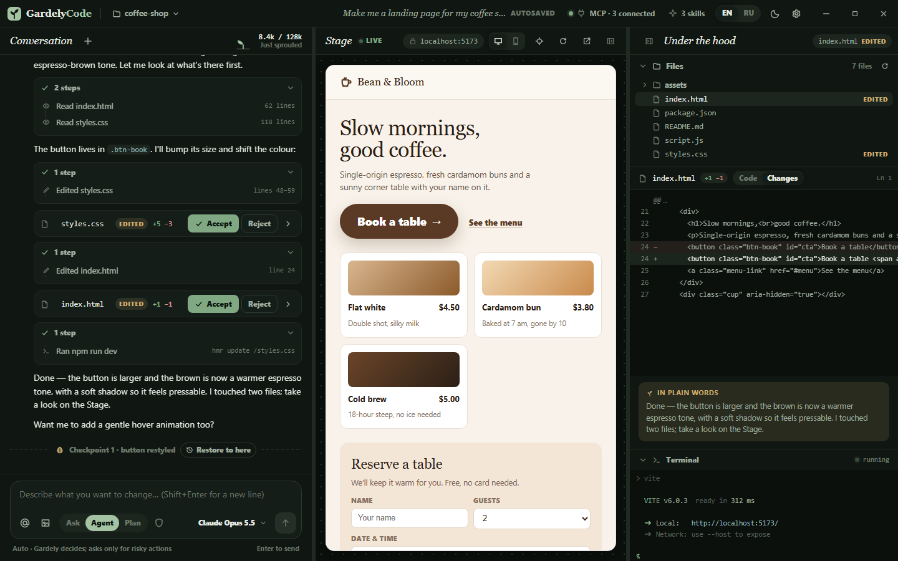
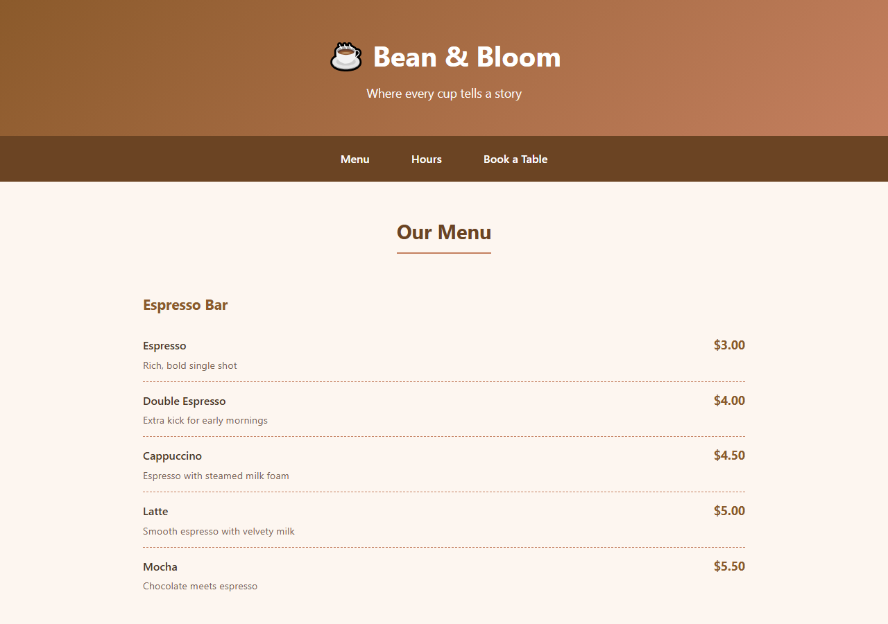

No API keys. No card.
Free models are built in. Install, open, start describing — that is the whole setup.
Free AI vibecoding IDE · Windows
Describe it. Gardely builds it, runs it, and shows you the result — free, no API keys.
Free · Windows 10/11

Demo
One prompt, zero setup. This is the page Gardely built from it.

Built by Gardely in under 2 minutesa real, measured run — not a mock-up
How it works
Say what you want in plain words — English or Russian. Attach a screenshot if it helps.
Files appear as it writes them. Every change arrives as a diff you can accept or reject — one click each.
The Stage shows your app running the moment it's ready. Every step is a checkpoint: one click on “Restore to here” and you're back.
Features
Free models are built in. Install, open, start describing — that is the whole setup.
Pick the model that fits the job: Opus for big features, Fable for design, Sonnet for everyday coding, Haiku for instant edits.
You decide how much Gardely does on its own — from asking before every edit to running everything.
Every turn is saved. Didn't like where it went? Restore to any point and try another way.
Connect tools over MCP. Configs from other editors work as they are — nothing to rewrite.
Teach Gardely your way with SKILL.md playbooks, and keep the project's conventions in AGENTS.md.
Live preview, a real terminal and a code editor — side by side, in one window.
The whole interface — and Gardely itself — speaks both. Switch any time.
A native Rust core. Light on memory, quick to start — even on a modest laptop.
Screenshots
Open source
The workspace modules — files, search, terminal, live preview — plus the skills and project templates are open on GitHub. Read them, fork them, send a pull request.
The core — the Gardely agent, the AI models and the interface — is ours and stays proprietary. That is what keeps the app free and the models keyless.
View on GitHubFAQ
Yes. GardelyCode is free to download and use. The built-in models come from free providers with fair-use limits — when a model is busy, Gardely waits a few seconds and carries on. No trial, no card.
No. Nothing to sign up for, nothing to paste. Install and start describing.
GardelyCode runs on top of leading open models through free providers. The models — Claude Opus, Fable, Sonnet, Haiku — are tuned for different kinds of work; Opus is the default.
Here is the honest version: to generate answers, your prompts and the code you are working on are sent to the AI providers. So don't paste secrets, keys or passwords into the chat. Everything else — your project files, your terminal — stays on your PC.
Windows first. Mac and Linux builds are planned — follow the Telegram channel to hear when they land.
Community
New builds, short demos and the roadmap — on Telegram, YouTube and TikTok.